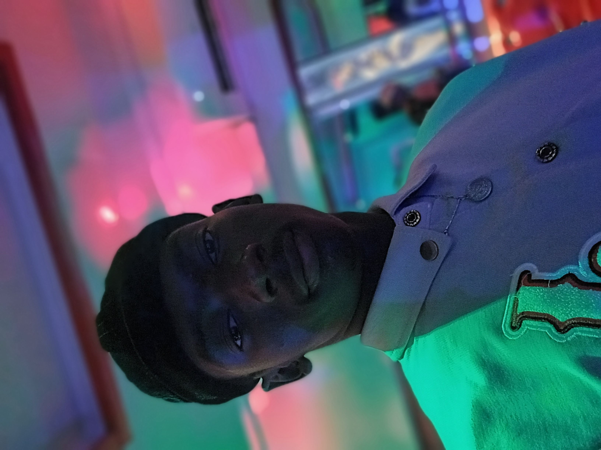

Curiculume Vitae
I- ETAT CIVIL 
Nom: GUEYE
Prénom: Amadou
Date et lieu de naissance: le 27/06/2002 à Timbi Madina
Nationalité: Sénégalaise
Profession: Etudiant
Situation matrimoniale: Célibataire
Adresse: Rufisque
Tel: +221772864465
No, : Valzure
II- FORMATION ACADEMIQUE
- Etudes Universitaires
2022-2023: 1ère Année Génie Informatique à l'Université Cheikh Anta Diop de Dakar
Ecole Supérieur Polytechnique
2021-2022: 1ère Année Génie Informatique à l'Institut Supérieur de Technologie de Mamou
- Etudes Secondaires
2018-2021: Lycée Tely Diallo
Baccalauréat Unique
Option: Science Mathématiques
Diplôme Obtenu: Attestation d'admission au Baccalauréat
2015-2018: Collège Tely Diallo
Diplôme Obtenu: Brevet d'Etudes du prémier Cycle (BEPC)
- Etudes Primaires
2007-2014: Ecole Primaire Tely Diallo
Diplôme Obtenu: Certificat d'Etudes Primaires (CEP)
III- LANGAGES PARLEES
Etrangères: Français (lire,écrire et parler)
Anglais (niveau scolaire)
Nationales: Poular, Wolof
IV- LOISIRS
Football, Lecture et Tourisme